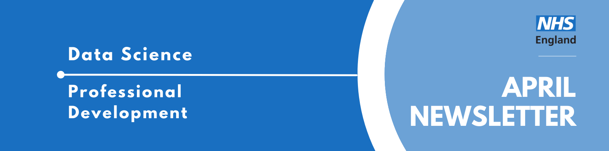

Data Science Community for Health and Care Newsletter April 2025

Welcome to the latest newsletter from the Data Science Community for Health and Care, brought to you by the NHS England Data Science Professional Development Functional Team.
The newsletter team are always happy to receive constructive feedback, and we invite you to send us any contributions you may have.
If you cannot access something of interest to you, please reach out.
Thanks for reading! – newsletter team
Blowing the Trumpet for Data Science
Welcome to the second installment of our “Interview with a Data Scientist” series, where we explore the careers and work of the talented members of the NHS England Data Science team. We aim to showcase the fantastic individuals who contribute to the NHS England Data Science Profession and provide valuable insights for those considering a career in Data Science within the healthcare sector.
This week, we have the pleasure of hearing from Sarah Culkin, the Deputy Director of the Data Science team. Leveraging her experience in both health and data, Sarah is leading the charge to support the digital transformation of the NHS and champion the growth of data science as a vital profession across the organisation.
Read more…
How did you end up in data science at the NHS? What did you do before, and what really sparked your interest in this field?
I studied chemistry at the University of Leeds; after my undergraduate degree, I stayed on to pursue a PhD in organic chemistry.
My research focused on peptides and proteins, which meant a significant amount of time in the lab, and more time than I’d like to recall spent washing glassware! However, a turning point came when the department acquired a robot to run experiments. This was my first real immersion in programming and data handling.
Towards the end of my PhD, I came across a job advertisement for the Government Operational Research Service (GORS), a service often considered a precursor to modern data science. I applied and was placed within the Department of Health.
I’ve remained within the health sector and the realm of data ever since, for about 17 years now, although I’ve had the opportunity to work in many different areas.
My passion for data science truly ignited around 2016, and I took the initiative to establish a small data science team within the Department of Health. Since then, I’ve held a variety of roles across the Department of Health and Social Care (DHSC), NHS England, and NHSX. I also spent some valuable time at Leeds Teaching Hospitals Trust and in a data policy role. Ultimately, though, leading a data science team is where my true passion lies.
What are you currently working on? Are there any projects that you’re particularly excited about, or that you feel are making a real difference? What impact are you having?
As Deputy Director of the Data Science team at NHS England, my focus has shifted from direct project involvement to leading the team and shaping its strategic direction. While I miss the day-to-day project work, I now dedicate my time to raising the team’s profile and securing new opportunities for us to contribute.
Two current areas of work particularly excite me. Firstly, the ongoing development of data science as a recognised profession within the NHS.
For example, our PhD intern programme, which connects the NHS with early-career researchers in academia, has been running successfully for several years (more information can be found here). This initiative brings fresh perspectives and skills into the NHS.
We also now oversee a Data Science Masters programme, a fantastic opportunity to provide advanced training to our colleagues, enhancing their capabilities and the overall data science capacity within the NHS.
I was also involved in developing the data science competency frameworks and, more recently, a continuous professional development policy. I firmly believe that having a clear, fair, well-defined, and well-promoted profession is crucial for attracting and retaining talent and ensuring high standards.
More recently, I’ve had the rewarding experience of engaging in school outreach. The sessions at primary schools were particularly memorable; the children’s questions are often wonderfully wild, funny, and insightful!
The second area that truly excites me is shaping the new projects coming into the team. I’m particularly keen to see how data science can effectively support the digital transformation initiatives within the NHS, as well as inform crucial operational decisions.
It’s fascinating to observe how different teams operate and identify how data science can provide valuable assistance. I play a key role in scoping these projects to ensure they not only meet but potentially exceed the initial requirements.
Increasingly, we’re seeing colleagues interested in leveraging the power of AI in their work, which brings exciting new challenges, opportunities, and collaborations for our team.
Events
Lots of exciting things coming up! See the full calendar here, and a small selection below.
Supremacy - Data Ethics and Society Reading Group
Tuesday 29th April, 12:00-14:00, Online
Join us at the Data Ethics & Society Reading Group to discuss Supremacy by Parmy Olson.
We will be holding two sessions over two weeks. The sessions will each focus on a different section of the book- but if you can’t make the one you want to come to, we can still guarantee a great conversation! Read more about our changes in our recent Data in Government blog post.
The event is FREE to attend, but places are limited so please sign up to reserve your spot! (Registration closes on Friday 18th April at 17:00)
Please note this event is for Public Sector workers only
LSE: The power of data: ethics, politics, and public interest
Thursday 8th May, 18.30-20.00, In-person and online public event (Auditorium, Centre Building)
Data profoundly influences all of our lives and the social, economic and political systems that govern them. Everywhere we turn we are creating increasing amounts of data that powers decision-making algorithms and shapes our future. It is however important to remember how partial and biased data can be given the priviledged position it has in the perception of absolute truth.
This event will discuss important questions around the role of data science in understanding and shaping the public interest, from access to information to civic participation and business development to democratic processes.
DS: Game On 2025
Saturday 17th May, All Day, London
Join us for our 11th festival, DSF Game On 2025! Top tech speakers, incredible partners and a thriving community, all completely free.
The ballot is open for those wanting a chance to get tickets to DSF’s Game On 2025. Click through the link above to find out how to apply, and the (free) tickets to those successful will be sent out in April.
There will be a mixture of talks featured at the festival, covering all things data (science, engineering, etc) and at a variety of technical levels. You can view last years playlist on YouTube here to get an idea of the talks at the events.
Pint of Science 2025
Tuesday 20th May, 18:30 - 21:30. Prince Albert Pub, 163 Royal College Street, London, NW1 0SG
We’re told AI is taking an increasingly important role in decision-making, but what does this really mean? And how should we, the people, respond to this? Understanding how AI is really being used for prediction and decision-making is the best tool for interpreting the daily flow of AI news.
Three researchers from the Alan Turing Institute will take to the stage to help. We’ll hear how AI is being used in the real world and how it relates to the big things in life: health, travel safety and (most important of all) the weather. Plus join in with our annual Big Quiz of AI!
Health Data Science Seminar Series
Wednesday 4th June, 14:00 - 15:30, Online
This series of seminars presents an exciting opportunity to hear about recent developments in health data science, generate ideas and help build the health data science community. It is hosted by the ONS’s Data Science Campus and Health Analysis Team in partnership with Health Data Research UK (HDR UK).
The Health Data Science Seminar series provides a dedicated space for data scientists, policymakers, health professionals, academics, epidemiologists, statisticians and other members of the data science community to come together and explore the potential of data science, to help improve health and health policy. Sign up now and be part of the conversation - it’s free!
Please note, this seminar takes place on Microsoft Teams, with the access link to be sent to all registered attendees at least 24 hours before the start of the event.
If you have any questions about this seminar, please email outreach.engagement.community@ons.gov.uk.
Big Data LDN
Wednesday 24th - Thursday 25th September, All Day, London
Big Data LDN is the UK’s leading free to attend data, analytics and AI conference & exhibition.
The two day event is a hub for the Data Community to learn and share best practice, build relationships and find the tools needed to develop an effective data-driven business.
See more future events on the calendar
Know of any events we should feature next month? Let us know by clicking the “Contribute” button, or here.
Using AI for early detection of lung cancer
Looking for an interesting read? The British Journal of General Practice has a paper on Artificial intelligence for early detection of lung cancer in GPs’ clinical notes: a retrospective observational cohort study.
The paper looks at developing new prediction tools to improve the risk assessment of lung cancer, by performing text analysis on electronic patient data using natural language processing and machine learning. The processing is applied to general practice files of four networks in the Netherlands.
Check out our collection of training resources in the Resources Section! Can you spot something missing? Contact us!